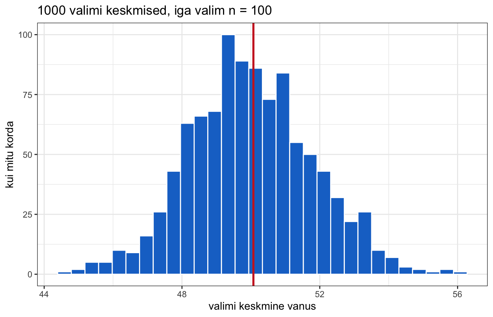
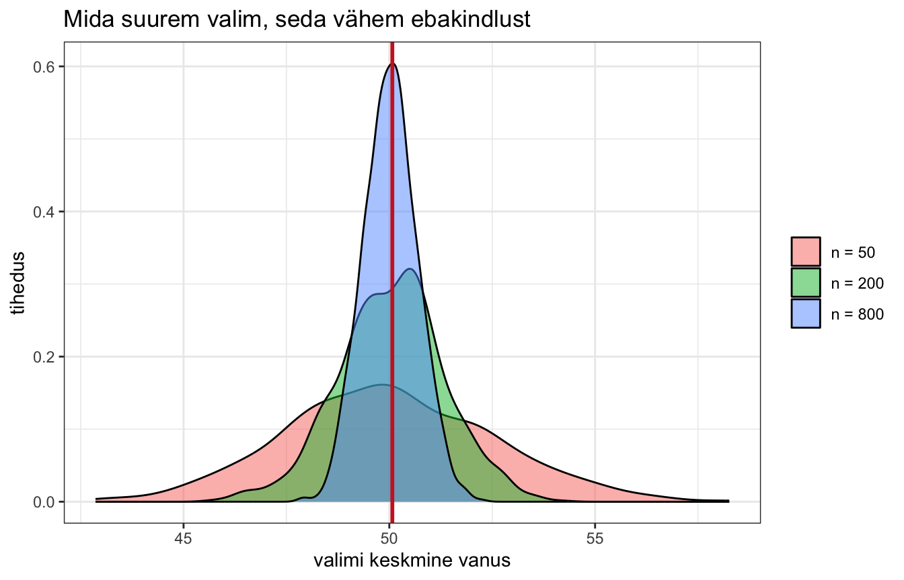
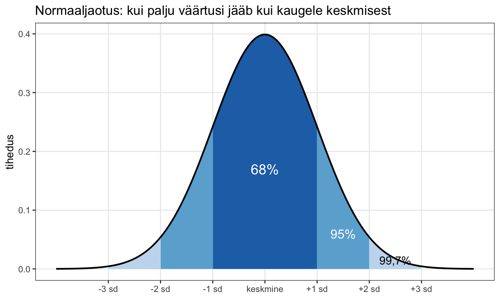
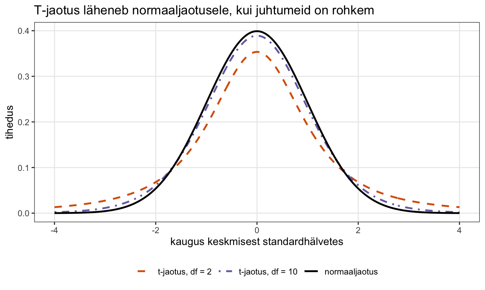

library(dplyr)
library(ggplot2)
load("data/ess11_ee_clean.rdata")6. Valim ja ebakindlus
Siiani oleme kirjeldanud seda, mida me oma andmetes näeme. Nüüd hakkame küsima midagi palju julgemat: mida saame me nende 1293 inimese põhjal öelda kogu Eesti kohta?
See on kursuse kõige raskem osa. Ta on ka kõige olulisem — kõik ülejäänu, t-test, korrelatsioon, regressioon, logistiline regressioon, toetub täpselt sellele loogikale, mille me siin läbi käime. Kui see koht selgeks saab, siis on kõik ülejäänu variatsioon samal teemal.
Seetõttu on siin peatükis kõige tähtsamad kohad esitatud kahel viisil. Sakid “Lihtsam seletus” ja “Täpsem seletus” räägivad samast asjast — üks pilte ja katseid kasutades, teine valemitega. Vali see, mis sulle sobib. Kui üks jääb segaseks, proovi teist.
Valim ja populatsioon
Kaks mõistet, mis tuleb selgeks saada.
Populatsioon on kogu see hulk, kelle kohta me tahame midagi öelda. Meie puhul: kõik Eesti elanikud alates 15. eluaastast. Neid on umbes 1,2 miljonit.
Valim on see osa populatsioonist, kelle kohta meil päriselt andmed on. Meie puhul: 1293 inimest.
Kõige olulisem asi valimi juures on see, et ta on juhuvalim. See tähendab, et igal populatsiooni liikmel oli sama tõenäosus valimisse sattuda. Mitte vabatahtlikud, mitte need, keda oli lihtne kätte saada — juhuslikult valitud.
Miks juhuslikkus on nii oluline? Sest ainult juhuvalimi puhul saame me matemaatiliselt hinnata, kui kaugel meie valimist arvutatud arv võib olla tõelisest arvust populatsioonis. Mittejuhusliku valimi puhul ei ole mingit võimalust seda teada. Selline valim ei ole “natuke halvem” — ta on üldistuste tegemiseks lihtsalt kasutu.
Ja siit tuleb probleem. Juhuslikkus tähendab, et meie valim ei ole populatsiooni täpne koopia. Mõned inimesed sattusid valimisse, teised mitte. Kui me võtaksime uue valimi, oleks ta natuke teistsugune. Ja seega oleks ka iga arv, mille me valimist arvutame, natuke teistsugune.
Meie valimi keskmine vanus on:
mean(data$vanus, na.rm = TRUE)## [1] 50.07309Aga Eesti tegelik keskmine vanus ei ole täpselt see. Küsimus on: kui kaugel ta olla võib?
Kust tuleb ebakindlus
Teeme katse. Meil ei ole võimalik Eestist uut valimit võtta, aga me saame teha midagi sarnast: võtta oma 1293 inimesest korduvalt väiksemaid juhuvalimeid ja vaadata, kuidas keskmine iga kord muutub.
Selleks on kaks funktsiooni:
sample()võtab juhusliku valimi. Esimene argument on see, millest valida, argumentsizeütleb, mitu juhtumit võtta, ja argumentreplace = TRUEütleb, et sama inimene võib mitu korda valituks osutuda.set.seed()fikseerib juhuslikkuse. Arvuti juhuarvud ei ole päriselt juhuslikud — nad arvutatakse mingist algväärtusest. Kui sa selle algväärtuse fikseerid, saad iga kord sama tulemuse.
Miks
replace = TRUE? Sest me teeskleme, et võtame valimeid Eesti elanikkonnast, mitte oma 1286 vastajast. Elanikkond on meie andmestikust tuhat korda suurem, seega on tõenäosus sama inimene kaks korda saada praktiliselt olematu. Tagasipanekuga valimine jäljendab seda olukorda.
Kasuta alati
set.seed(), kui su koodis on juhuslikkust. Ilma selleta saad sa iga kord erineva tulemuse ja sa ei suuda oma enda analüüsi korrata. Number sulgudes võib olla ükskõik milline — oluline on ainult see, et ta oleks alati sama.
Võtame ühe valimi, sada inimest:
set.seed(2026)
vanused <- na.omit(data$vanus)
valim1 <- sample(vanused, size = 100, replace = TRUE)
mean(valim1)## [1] 49.46Ja veel ühe:
valim2 <- sample(vanused, size = 100, replace = TRUE)
mean(valim2)## [1] 48.67Erinev arv. Ja kolmas oleks jälle erinev.
Teeme seda nüüd tuhat korda. Selleks on funktsioon replicate(), mis kordab sama tegevust nii mitu korda, kui palju sa ütled, ja kogub tulemused kokku. Esimene argument on korduste arv, teine on tegevus.
Selleks et kood loetavaks jääks, teeme kõigepealt oma funktsiooni, mis võtab ühe valimi ja annab tagasi tema keskmise. Siis kordame teda tuhat korda.
Funktsiooni loomine käib nii: nimi, <-, sõna function, ümarsulgudes sisendi nimi ja looksulgudes see, mida teha. Viimane rida funktsiooni sees on see, mille ta tagastab. Nimetame ta uhe_valimi_keskmine() — ta võtab sisendiks valimi suuruse ja annab tagasi selle valimi keskmise.
set.seed(2026)
uhe_valimi_keskmine <- function(valimi_suurus) {
valim <- sample(vanused, size = valimi_suurus, replace = TRUE)
mean(valim)
}
keskmised <- replicate(1000, uhe_valimi_keskmine(100))
length(keskmised)## [1] 1000head(keskmised)## [1] 49.46 48.67 48.44 50.90 51.54 52.63Meil on nüüd tuhat keskmist. Vaatame, kuidas nad jaotuvad.
Joonisel kasutame ka funktsiooni geom_vline(), mis tõmbab püstise joone. Argument xintercept ütleb, millise x-telje väärtuse juurde ta tuleb. Argument bins funktsioonis geom_histogram() määrab, mitmeks kastiks skaala jagatakse.
ggplot(data.frame(keskmised), aes(x = keskmised)) +
geom_histogram(bins = 30, fill = "dodgerblue3", color = "white") +
geom_vline(xintercept = mean(vanused), color = "firebrick3", linewidth = 1) +
labs(
x = "valimi keskmine vanus",
y = "kui mitu korda",
title = "1000 valimi keskmised, iga valim n = 100"
) +
theme_bw()
Vaata seda joonist tähelepanelikult. Siin on peidus kogu järeldava statistika mõte.
Punane joon on kõigi 1293 inimese tegelik keskmine. Sinised tulbad on need tuhat keskmist, mille me juhuvalimitest saime.
Kolm asja, mida tähele panna:
- Keskmised ei ole kõik ühesugused. Nad hajuvad. See ongi ebakindlus.
- Nad on koondunud tõelise väärtuse ümber. Ükski üksik valim ei taba täpselt õigesti, aga nad ei eksi ka süstemaatiliselt ühes suunas.
- Jaotus on kellukesekujuline. See ei ole juhus — see on normaaljaotus ja ta tekib alati, kui sa piisavalt palju juhuvalimeid võtad.
Kui hajusad nad on? Selle saame välja arvutada.
sd(keskmised)## [1] 1.801523See arv ongi see, mida me otsime. Ta ütleb, kui palju üks üksik valimi keskmine tüüpiliselt tõelisest väärtusest eksib.
Mis juhtub, kui valim on suurem?
Teeme sama katse kolme erineva valimisuurusega.
set.seed(2026)
k_50 <- replicate(1000, uhe_valimi_keskmine(50))
k_200 <- replicate(1000, uhe_valimi_keskmine(200))
k_800 <- replicate(1000, uhe_valimi_keskmine(800))
c(
n50 = sd(k_50),
n200 = sd(k_200),
n800 = sd(k_800)
)## n50 n200 n800
## 2.5246819 1.2875353 0.6536432Mida suurem valim, seda väiksem hajuvus. Vaatame ka pilti.
Joonise jaoks paneme kolm tulemust ühte andmetabelisse. Funktsioon rep() kordab väärtusi; argument each ütleb, mitu korda igaüht järjest korrata.
sim <- data.frame(
keskmine = c(k_50, k_200, k_800),
valim = rep(c("n = 50", "n = 200", "n = 800"), each = 1000)
)
sim$valim <- factor(sim$valim, levels = c("n = 50", "n = 200", "n = 800"))
ggplot(sim, aes(x = keskmine, fill = valim)) +
geom_density(alpha = 0.5) +
geom_vline(xintercept = mean(vanused), color = "firebrick3", linewidth = 1) +
labs(
x = "valimi keskmine vanus",
y = "tihedus",
title = "Mida suurem valim, seda vähem ebakindlust",
fill = NULL
) +
theme_bw()
See on kogu asja tuum. Rohkem andmeid tähendab vähem ebakindlust. Mitte seetõttu, et suur valim oleks kuidagi “õigem”, vaid seetõttu, et suure valimi keskmised hajuvad tõelise väärtuse ümber vähem.
Sama loogika kehtib ka hajuvuse kohta andmetes endas: mida hajusamad on väärtused valimis, seda hajusamad on ka valimite keskmised, ja seda ebakindlamad me oleme.
Nüüd on sul olemas kogu intuitsioon, mida vaja. Järgmises sakis on sama asi valemitega — ja seal selgub, et seda hajuvust ei olegi vaja simuleerida. Selle saab välja arvutada ühest ainsast valimist.
Vaatame sama asja arvutuskäiguna. Alustame keskmisest.
Aritmeetiline keskmine on väärtuste summa jagatud väärtuste arvuga:
\[\bar{X} = \frac{\sum_{i=1}^n{x_i}}{n}\]
Arvutame ta kõigepealt “käsitsi” ja siis funktsiooniga, et näha, et tulemus on sama.
Funktsioon
as.vector()teeb objektist tavalise vektori. Seda on siin vaja sellepärast, etna.omit()jätab objekti külge lisainfo selle kohta, millised read ta eemaldas, ja see segaks hilisemaid arvutusi.
vanus <- na.omit(data$vanus)
vanus <- as.vector(vanus)
sum(vanus) / length(vanus)## [1] 50.07309mean(vanus)## [1] 50.07309Nüüd hajuvus. Meid huvitab, kui kaugel keskmisest väärtused tüüpiliselt on. Esimene mõte oleks arvutada keskmine kaugus keskmisest — aga see ei tööta.
kaugus <- vanus - mean(vanus)
mean(kaugus)## [1] 7.470092e-15Vastus on praktiliselt null, sest positiivsed ja negatiivsed kõrvalekalded tühistavad üksteist. Keskmine kaugus keskmisest on alati null — see on keskmise definitsioon.
Mis on see
e-15? See on teaduslik notatsioon. Väga suuri või väga väikeseid arve kuvab R niimoodi, et nad ekraanile ära mahuksid.2.7e-15tähendab \(2{,}7 \times 10^{-15}\) ehk üliväikest arvu. Praktiliselt null.Kui sa ei taha teaduslikku notatsiooni näha, jooksuta käsk
options(scipen = 5).Jäta see meelde. Sa kohtad seda regressioonitabelites pidevalt ja siis on hilja imestada.
Lahendus on võtta kaugused ruutu, mis teeb kõik positiivseks. Nii saame dispersiooni (variance):
\[var = \frac{\sum(x_i-\bar{x})^2}{n}\]
ruutkaugus <- kaugus^2
sum(ruutkaugus) / length(ruutkaugus)## [1] 324.9356Ruutu võtmine ajas aga mõõtühiku sassi — nüüd on tulemus ruutaastates. Võtame ruutjuure tagasi ja saame standardhälbe:
\[sd = \sqrt{\frac{\sum(x_i-\bar{x})^2}{n}}\]
(sum(ruutkaugus) / length(ruutkaugus))^0.5## [1] 18.02597Parandus, mis on vajalik
Siin on üks konks. Meie valimis ei ole populatsiooni kõige haruldasemaid, kõige äärmuslikumaid väärtusi — nad on haruldased just sellepärast, et nad valimisse tõenäoliselt ei satu. Seetõttu alahindab valimi hajuvus alati populatsiooni hajuvust.
Selle parandamiseks jagatakse mitte \(n\)-iga, vaid \(n-1\)-ga:
\[sd = \sqrt{\frac{\sum(x_i-\bar{x})^2}{n-1}}\]
Just seda teevad R-i funktsioonid var() ja sd().
var(vanus)## [1] 325.1884sd(vanus)## [1] 18.03298Seda \(n-1\) nimetatakse vabadusastmeteks (degrees of freedom).
Mida vabadusastmed tähendavad? Kõige lihtsam on mõelda neist kui vabast infost andmetes.
Oletame, et sul on viis arvu ja sa juba tead nende keskmist. Kui nüüd neli arvu ette anda, siis viies ei ole enam vaba — ta on üheselt määratud, sest keskmine peab kokku tulema. Viiest arvust on vaba ainult neli.
Üldiselt: iga suurus, mille sa oma andmetest välja arvutad ja hiljem kasutad, võtab ühe vabadusastme ära. Standardhälbe arvutamiseks oli meil vaja keskmist — see maksis ühe vabadusastme, seega jäi järele \(n-1\).
Sellepärast sõltub vabadusastmete arv kahest asjast: kui palju juhtumeid on ja kui palju suurusi on andmetest juba välja arvutatud. Regressioonis, kus arvutatakse mitu koefitsienti, kaob vabadusastmeid rohkem.
Standardviga
Nüüd kõige tähtsam samm. Meid ei huvita tegelikult mitte vanuse hajuvus, vaid keskmiste hajuvus — täpselt see, mida eelmises sakis simuleerisime.
Juhuvalimi puhul kehtib matemaatiline seaduspära, mis lubab selle ühest ainsast valimist välja arvutada. Seda suurust nimetatakse standardveaks:
\[se_{\bar{x}} = \frac{sd}{\sqrt{n}}\]
sd(vanus) / length(vanus)^0.5## [1] 0.50286Kontrollime, kas see klapib simulatsiooniga. Simulatsioonis kasutasime valimeid suurusega 100:
sd(vanus) / 100^0.5## [1] 1.803298Ja simulatsioonist saime:
set.seed(2026)
uhe_valimi_keskmine <- function(valimi_suurus) {
valim <- sample(vanus, size = valimi_suurus, replace = TRUE)
mean(valim)
}
sd(replicate(1000, uhe_valimi_keskmine(100)))## [1] 1.801523Praktiliselt sama arv. Valem ennustas täpselt ära selle, mida simulatsioon näitas — ilma et oleks olnud vaja tuhat valimit võtta.
Vaata valemit ja mõtle, mida ta ütleb. Standardviga on murd, kus lugejas on hajuvus ja nimetajas ruutjuur valimi suurusest.
- Suurem hajuvus → suurem standardviga → rohkem ebakindlust.
- Suurem valim → suurem nimetaja → väiksem standardviga → vähem ebakindlust.
Täpselt see, mida simulatsioon näitas. Ainult et nüüd me ka teame, miks.
Pane tähele ka ruutjuurt: valimi kahekordistamine ei poolita ebakindlust, vaid vähendab teda ainult umbes 30% võrra. Täpsuse ostmine läheb aina kallimaks.
Normaaljaotus ja tõenäosus
Miks on oluline, et need keskmised jaotuvad normaaljaotuse järgi? Sest normaaljaotusel on üks väga kasulik omadus: me teame täpselt, kui suur osa väärtustest asub kui kaugel keskmisest.

Umbes 68% väärtustest jääb ühe standardhälbe kaugusele keskmisest, umbes 95% kahe standardhälbe kaugusele ja umbes 99,7% kolme kaugusele.
Kaugust keskmisest standardhälvetes nimetatakse z-skooriks. Kui z-skoor on 1, siis on väärtus ühe standardhälbe kaugusel keskmisest.
Funktsioon pnorm() ütleb, kui suur osa normaaljaotusest jääb antud z-skoorist allapoole (vasakule).
Argument lower.tail määrab, kummalt poolt vaadata: vaikimisi TRUE annab osakaalu allpool antud väärtust, FALSE annab ülalpool.
pnorm(1.96)## [1] 0.9750021pnorm(1.96, lower.tail = FALSE)## [1] 0.0249979Esimene arv ütleb, et 97,5% väärtustest on väiksemad kui 1,96 standardhälvet üle keskmise. Teine pöörab küsimuse ümber: 2,5% väärtustest on sellest suuremad.
Funktsioon qnorm() teeb vastupidist — annab z-skoori, millele vastab teatud osakaal.
qnorm(0.025)## [1] -1.959964qnorm(0.975)## [1] 1.959964Sama arv, ainult märk on erinev, sest normaaljaotus on sümmeetriline. Arv 1,96 on selle kursuse üks olulisemaid arve. Tema vahele jääb 95% normaaljaotusest.
T-jaotus
Väikese valimi puhul kasutatakse normaaljaotuse asemel t-jaotust. Ta näeb normaaljaotusega väga sarnane välja, kuid on servadest natuke laiemaks venitatud — sest väikese valimi puhul on rohkem ebakindlust.

Mida vähem vabadusastmeid, seda lamedam on jaotus ja seda paksemad on tema sabad — ehk seda tõenäolisem on näha keskmisest kaugel olevat väärtust. Kümne vabadusastme juures on vahe normaaljaotusest juba väike.
T-jaotuse kuju sõltub vabadusastmete arvust. Funktsioon qt() töötab nagu qnorm(), kuid vajab lisaks argumenti df (degrees of freedom).
qt(0.975, df = 10)## [1] 2.228139qt(0.975, df = 100)## [1] 1.983972qt(0.975, df = 1000)## [1] 1.962339Mida rohkem juhtumeid, seda lähemale jõuab t-jaotus normaaljaotusele ja seda lähemale jõuab piirväärtus arvule 1,96.
Rusikareegel: kui juhtumeid on paarsada või rohkem, on piirväärtus umbes 2. Meie andmestikuga ei ole vahet, kas kasutada normaaljaotust või t-jaotust.
Usaldusvahemikud
Nüüd saame kokku panna kõik, mida vaja.
Usaldusvahemik näitab vahemikku, kuhu tõenäoliselt jääb tõeline väärtus populatsioonis. 95% usaldusvahemik ulatub 1,96 standardviga keskmisest mõlemale poole.
k_vanus <- mean(vanus)
sviga <- sd(vanus) / length(vanus)^0.5
c(
alumine = k_vanus - 1.96 * sviga,
keskmine = k_vanus,
ylemine = k_vanus + 1.96 * sviga
)## alumine keskmine ylemine
## 49.08749 50.07309 51.05870Kui tahame olla väga täpsed, kasutame t-jaotust:
c(
alumine = k_vanus + qt(0.025, df = length(vanus) - 1) * sviga,
ylemine = k_vanus + qt(0.975, df = length(vanus) - 1) * sviga
)## alumine ylemine
## 49.08658 51.05961Vahe on tühine, nagu ennustatud.
Mida usaldusvahemik täpselt tähendab? Kui me võtaksime Eestist lõpmata palju kordi sama suure juhuvalimi ja arvutaksime iga kord usaldusvahemiku, siis 95% nendest vahemikest sisaldaks tõelist keskmist.
Igapäevases kasutuses tõlgendatakse teda lihtsamalt: see on vahemik, kus tõeline väärtus tõenäoliselt asub. Rangelt võttes ei ole see päris täpne, aga praktilise töö jaoks piisab.
Kuidas seda kirja panna
NõuanneKuidas seda kirja panna
Keskmist ei tohi kunagi esitada ilma ebakindluse hinnanguta. Miinimum on standardhälve; parem on lisada ka usaldusvahemik.
Vastajate keskmine vanus oli 50,1 aastat (standardhälve 18,3; 95% usaldusvahemik 49,1–51,1; n = 1286). Valimi suurust arvestades saab keskmist vanust hinnata küllaltki täpselt.
Pane tähele:
- standardhälve kirjeldab, kui hajusad on inimesed;
- standardviga ja usaldusvahemik kirjeldavad, kui kindlad me keskmises oleme.
Need kaks aetakse pidevalt segamini. Standardhälve on andmete omadus ja ta ei kahane, kui sa rohkem andmeid kogud. Standardviga on sinu teadmise omadus ja ta kahaneb.
Järgmiseks
Nüüd on meil olemas kõik, mida vaja hüpoteeside testimiseks. Sest hüpoteesi testimine on lõppkokkuvõttes lihtsalt küsimus: kas mingi huvipakkuv väärtus jääb meie usaldusvahemiku sisse või mitte?
Harjutused
1. Simulatsioon. Korda praktikumis tehtud simulatsiooni muutujaga usaldus_pol. Võta 1000 valimit suurusega 100 ja vaata nende keskmiste jaotust. Mis on selle jaotuse standardhälve?
2. Valimi suurus. Tee sama simulatsioon valimi suurusega 25 ja 400. Kui palju hajuvus muutub? Kontrolli valemiga, kas tulemus vastab ootusele.
3. Usaldusvahemik. Arvuta 95% usaldusvahemik muutuja rahulolu_dem keskmise ümber. Arvuta seejärel ka 99% usaldusvahemik — mis muutub ja miks?
4. Standardviga käsitsi. Arvuta muutuja haridus standardviga käsitsi (standardhälve jagatud ruutjuurega juhtumite arvust) ja kontrolli tulemust funktsiooniga t.test().